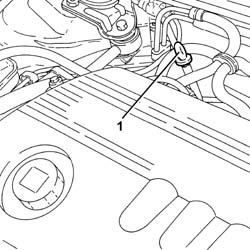
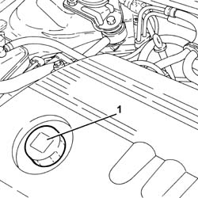
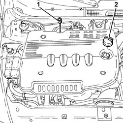
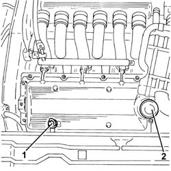

0010T11 engine oil check level and top up
- Path
- Procedures > 00 MAINTENANCE > 0010 NEW UNITS AND PLANNED MAINTENANCE'. > 0010T vehicle oil and fluids > 0010T11 engine oil check level and top up
- Kind
- repair procedure (removal / refitting; the operation number is the code)
- Applies to
- all engines; all production periods
- Interactive page
- https://sloeber94.github.io/elrnDB-a147/en/#/3024719
Applies to: engines: 1.6 TS, 2.0 TS; all production periods
Applies to: all engines; all production periods
Applies to: engines: 1.9 JTD 8V; all production periods
1. Remove the engine oil dipstick, clean and then fully reinsert. Remove and check the level is between the MIN and MAX limits.

Applies to: engines: 1.9 JTD 8V; all production periods
1. If the oil level is close to or even below the MIN level, add the recommended oil through the oil filler opening up to the MAX mark.
 | Type | Component | Name | Qty. |
|---|---|---|---|---|
- | Oli [l] | ENGINE LUBRICATION CIRCUIT | SELENIA TURBODIESEL | 4.4 |
For optimum operation of the engine in particularly harsh climatic conditions (temperatures below -15 degrees C), use the recommended oil for the engine lubrication circuit.
| Type | Component | Name | Qty. |
|---|---|---|---|---|
- | Oli [l] | ENGINE LUBRICATION CIRCUIT | SELENIA WR DIESEL | 4.4 |

Applies to: all engines; all production periods
Applies to: engines: 1.9 JTD 16V; all production periods
Proceed with removal 1016A10 sound-proofing cover - r + r .
1. Remove the engine oil dipstick, clean and then fully reinsert. Remove and check the level is between the MIN and MAX limits.
2. If the oil level is close to or even below the MIN level, add the recommended oil through the oil filler opening up to the MAX mark.
| Type | Component | Name | Qty. |
|---|---|---|---|---|
- | Oli [l] | ENGINE LUBRICATION CIRCUIT | SELENIA TURBODIESEL | 4.4 |
For optimum operation of the engine in particularly harsh climatic conditions (temperatures below -15 degrees C), use the recommended oil for the engine lubrication circuit.
| Type | Component | Name | Qty. |
|---|---|---|---|---|
- | Oli [l] | ENGINE LUBRICATION CIRCUIT | SELENIA WR DIESEL | 4.4 |

Applies to: engines: 1.9 JTD 16V; all production periods
Proceed with refitting 1016A10 sound-proofing cover - r + r .
Applies to: all engines; all production periods
Applies to: engines: 3.2 V6; all production periods
1. Remove the engine oil dipstick, clean and then fully reinsert. Remove and check the level is between the MIN and MAX limits.
2. If the oil level is close to or even below the MIN level, add the recommended oil through the oil filler opening up to the MAX mark.
| Type | Component | Name | Qty. |
|---|---|---|---|---|
- | Oli [l] | ENGINE LUBRICATION CIRCUIT | SELENIA RACING | 5.9 |

Topics linked from this page (2)
Topics that link to this page (26)
- 1004B10 power unit with manual gearbox - r + r
- 1020A20 crank case oil sump - r + r clean seals for sealant application
- 1020A30 engine oil drain plug - replace
- 1020D14 front crank shaft oil seal cover - r + r and replace seals for versions with oil pump on crank shaft, timing side
- 1020D26 flywheel side oil seal cover - r+r
- 1020D30 oil seal cover, fly wheel side - r + r and replace seals
- 1020D38 flywheel side oil seal - replace
- 1020D51 crank shaft rear mount - apply silicone to mating surfaces
- 1024B10 engine flywheel - r + r for versions with manual gearbox
- 1028H10 connecting rod and piston set - r r
- 1028H20 piston with connecting rod - r r
- 1084A42 engine oil pressure warning light switch - r + r
- 1084B12 engine oil pump - r+r
- 1084B23 oil pump control return - r r
- 1084B26 emgine oil intake duct - r r
- 1084B30 engine oil filter r r
- 1084B34 cartridge engine oil filter support - r + r
- 1084C34 engine oil cooling radiator - r + r
- 1084C36 Engine oil cooling RADIATOR mounting BRACKET - R.R.
- 1084C38 engine oil delivery and return pipes to cooling radiator - r + r
- 1810A20 clutch - r + r
- 1820A24 thrust bearing linkage - r + r
- 2110A10 manual gearbox and differential - r + r
- 2110C22 gear input shaft seals - r r
- 2710A35 intermediate drive shaft mount - r r
- 5040A20 air conditioner compressor - r+r - includes fluid level check and top up if necessary